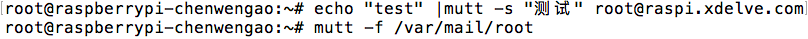
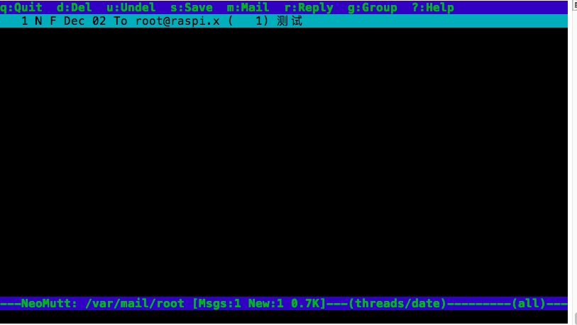

本文介绍树莓派3上邮件发送和接收配置。
首先安装mutt。
apt install mutt 编辑/etc/.muttrc文件，填写以下内容设置发邮件信息：
set crypt_use_gpgme = no
set use_from=yes
set realname=admin
set from=admin@raspi.xdelve.com
set envelope_from=yes启动sendmail
sendmail -bd查看进程应该是这样的：

此时已经可以发送邮件，测试发邮件命令：
echo "test mail" |mutt -s "test title" 1696292264@qq.com这时发出邮件有可能会很慢，把发送方的域名指向127.0.0.1，即可做到秒发。
编辑/etc/hosts：
添加
127.0.0.1 raspberrypi raspberrypi-chenwengao raspi.xdelve.commutt命令还可以查看收件。
首先给自己发一个邮件，然后使用mutt -f 收件箱文件查看邮件列表：


回车查看具体内容，其他操作按照顶部提示即可操作。
相关文档
随便看看